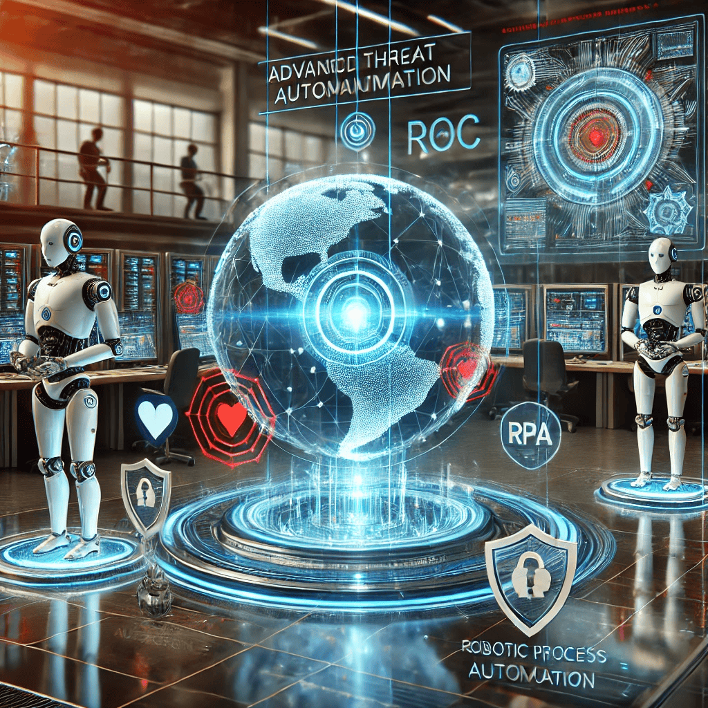
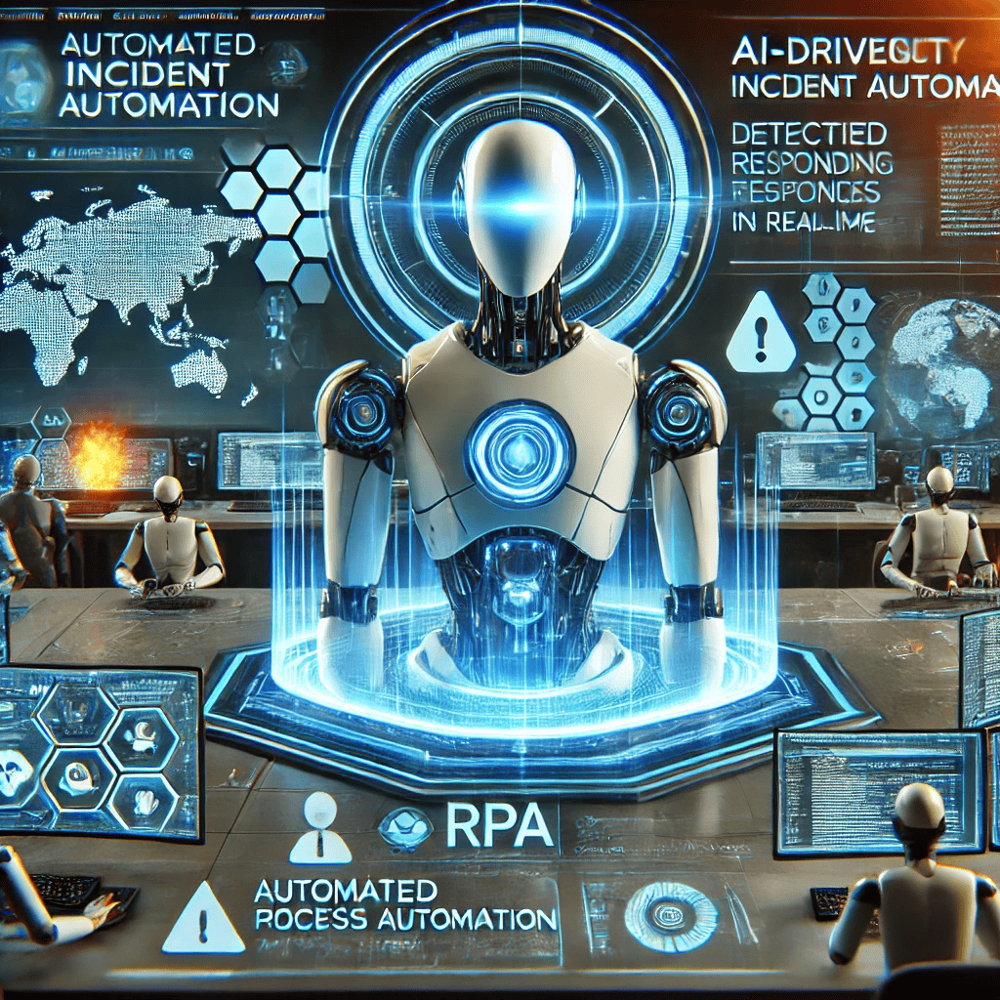

Incident Response & Automation
As cyber threats increase in complexity and speed, organizations cannot afford delays when responding to a potential breach. Traditional incident response protocols often involve a flurry of manual tasks—ranging from diagnosing the threat’s scope to patching compromised systems—which can be both time-consuming and prone to human error. That’s where AI-based incident response steps in. By automating crucial processes, these systems significantly compress reaction times, thereby limiting damage and reducing the costs associated with remediation. The faster a network can isolate infected endpoints and halt malicious activities, the harder it is for attackers to spread laterally or exfiltrate sensitive information.
AI-driven automation in incident response typically relies on advanced playbooks and real-time analytics. When a threat is detected—be it malware, a suspicious login, or anomalous network behavior—the system can execute predefined containment measures such as isolating affected devices or even blocking specific IP addresses. Similarly, patches or software updates can be pushed automatically to vulnerable endpoints without waiting for manual administrator intervention. This streamlined approach not only saves valuable time but also ensures that critical actions are taken consistently, regardless of external factors like staff availability or human fatigue. By centralizing and automating these steps, security teams are better positioned to stop threats in their tracks before they escalate into larger crises.
That said, a well-rounded incident response strategy still depends on human expertise for oversight and sophisticated decision-making. AI can orchestrate a lightning-fast containment process, but experts are needed to analyze post-incident data, fine-tune automated workflows, and ensure that security measures align with business objectives and regulatory requirements. Overreliance on automation can lead to missed contextual details or even disruptive false positives. By combining AI’s speed and efficiency with human judgment and strategic insight, organizations create a resilient defense posture that not only repels active threats but also learns from each incident to continually improve their security framework.
